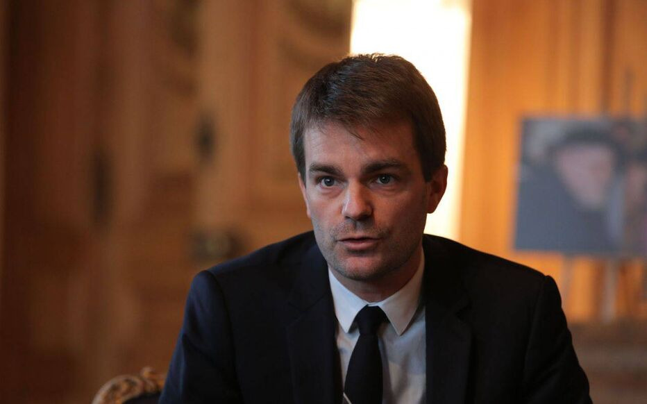
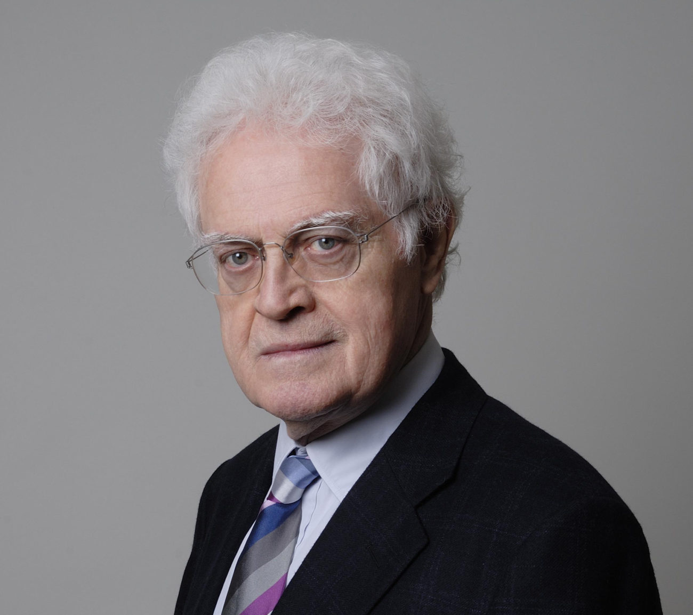
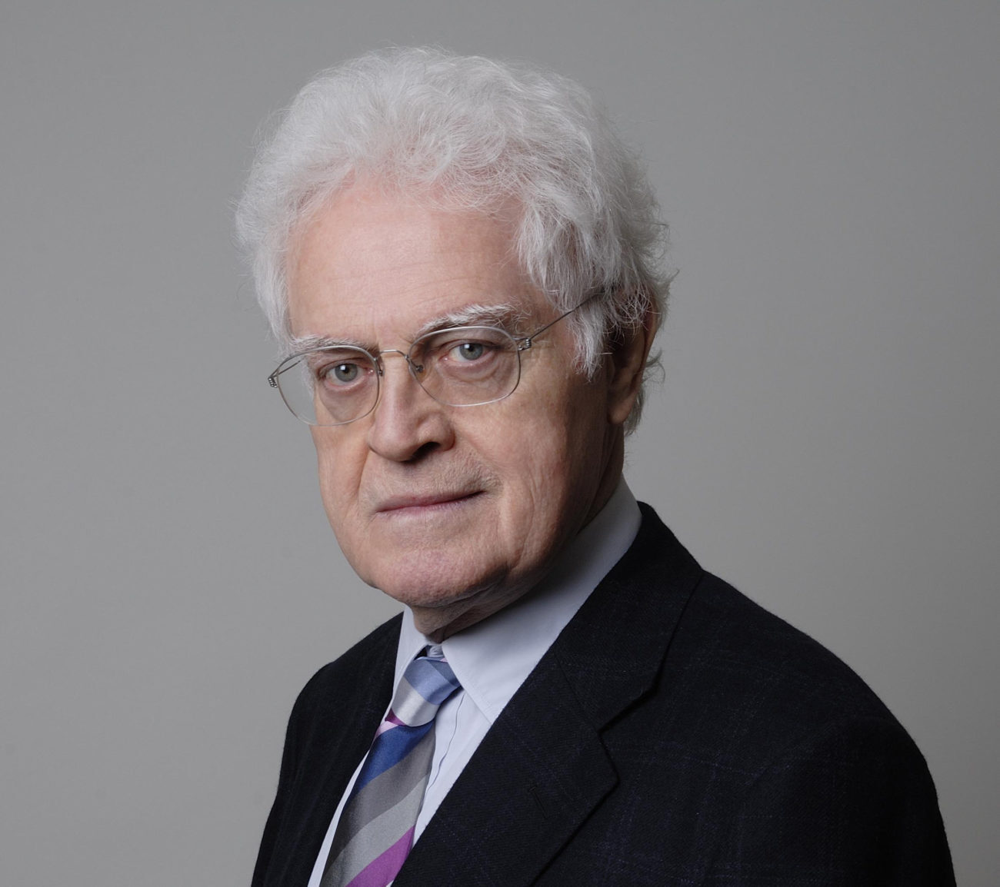

Cabinet de la Présidente de l'Assemblée nationale
 Yaël BRAUN-PIVET : présidente de l'Assemblée nationale
Maxence OLCARD : Secrétaire Général
Yaël BRAUN-PIVET : présidente de l'Assemblée nationale
Maxence OLCARD : Secrétaire Général
de la Présidence et de l'Assemblée nationale
Vice-présidents de l'Assemblée nationale
Marine LE PEN : 1ère Vice-présidente de l'Assemblée nationale

Julien ARCENAUX : vice-président
 Jean-Louis DEBRÉ : vice-président

Lionel JOSPIN : vice-président
Jean-Louis DEBRÉ : vice-président

Lionel JOSPIN : vice-président